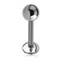
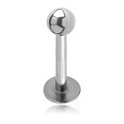
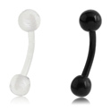
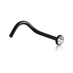
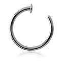
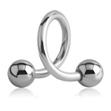
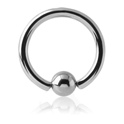
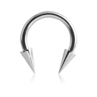

Штанга — украшение, состоящее из прямого стержня (основы) круглого сечения на который с обеих сторон накручиваются шарики. Существуют виды штанги с внутренней и наружной резьбой. Используется для проколов языка, хрящей (индастриал), носа (бридж, септум), щёк, генитального пирсинга и др.

Лабрет - украшение для пирсинга, состоящее из основы(прямой палочки), диска с одной стороны и шарика или накрутки с другой. Размеры: толщина основы 1.6мм; длина основы от 6мм до 20мм. Подходит для губ, ушей и др.

Микролабрет отличается более тонким стержнем (1.0мм или 1.2мм) и подходит для пирсинга мочек ушей, ушных хрящей и пирсинга носа.

Банан - состоит из изогнутого стержня круглого сечения на который с обеих сторон накручиваются шарики. Используется для проколов пупка, ушей, сосков, брови, вертикального прокола губы и др.

Нострил - украшение для крыла носа, обычно бывает в виде крючка (Screw) либо палочки (Pin, Bone). Используется только для носа.

Отдельно можно выделить специальные кольца для носа, они вставляются в прокол крыла носа с внутренней стороны.

Спираль - украшение напоминает виток пружины. Используется для проколов мочек и хрящей уха, но также подходит для установки в пупок, нос и губы.

Кольцо - кольцо с удалённым сегментом, вместо которого вставлен шар, сегмент или фигурная вставка. Подходит для проколов уха, губы, носа, сосков, генеталий, брови, пупка и кончика языка. Наиболее распространённые размеры: диаметр сечения от 0,8 мм до 10 мм и более. Диаметр украшения от 6 мм и более.

Циркуляр - имеет форму изогнутого в форме полумесяца стержня, на который с двух сторон накручиваются или вкручиваются шарики. Используется для уха, губ, носа, сосков, иногда брови, пупка и др.